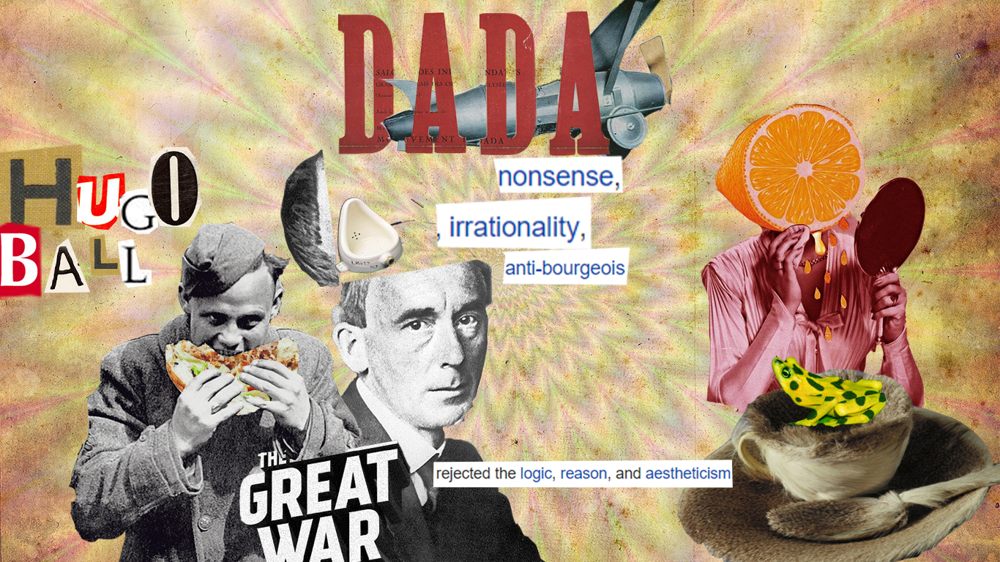

This was my first time ever using Photoshop in this advanced level. Before that we had to do our "passion collage" and "profile" in photoshop, but it was relativelly easy. This porject challenged me to use tool in photoshop that I have never used before, I learned how to make masks and layer in photoshop, as well as change colors of pictures using Hue/Saturation.
In the picture you can see the previous version of my collage, I have had few before I liked it.
In this one I did not have the colr scheme and the quotes, I added them in the final product. As our teachers sayd - Kill your darlings- I indeed did that.
There is also typography that is characteristic to Dadaism style.
